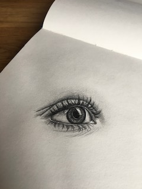
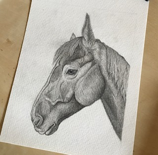
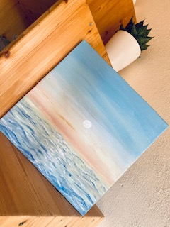

Zeichnungen von mir



In meiner Freizeit zeichne oder male ich sehr gerne, deswegen sind hier ein paar Bilder/Zeichnungen von mir zu sehen.
Am liebsten Zeichne/Male ich mit:
- Bleistift/Kohle
- Wasserfarben
- Ölfarben
Video, dass ich mit dem Handy aufgenommen habe
Auf dem Brend in Furtwangen
| Dinge die ich noch lernen möchte | Dinge die ich bereits kann |
|---|---|
| Vertonung von Videos | Videos schneiden/bearbeiten |
| Richtige Kameraführung | Fotografieren |
| Webdesign | Zeichnen |
Zum Schluss noch eines meiner Lieblingszitate, was mich dazu motiviert, das zutun was mich glücklich macht!:)
Als ich 5 Jahre alt war, hat meine Mutter mir immer gesagt, dass Glück der Schlüssel zum Leben ist.
Als ich zur Schule ging, fragten sie mich was ich werden will wenn ich groß bin.
Ich schrieb 'glücklich'.
Sie sagten mir, dass ich die Aufgabe nicht verstanden habe,
aber ich sagte ihnen, dass sie das Leben nicht verstanden haben.
-John Lennon